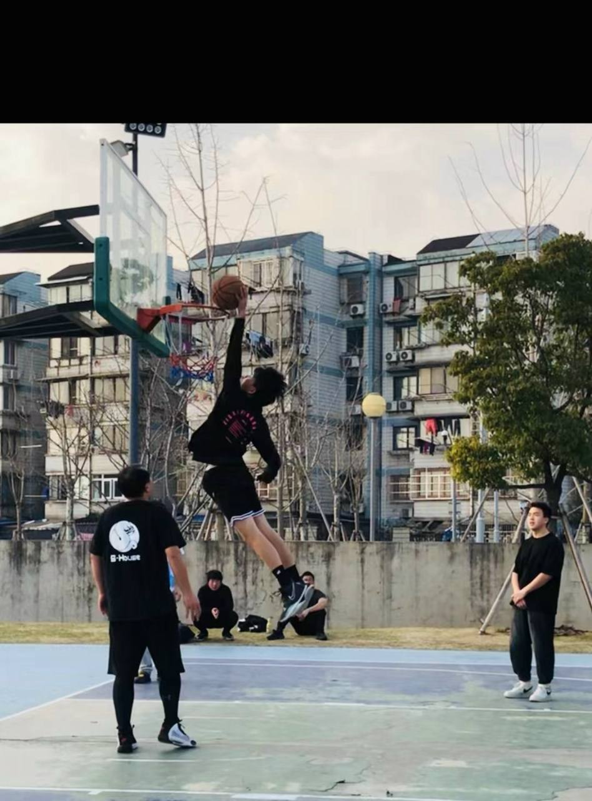

电商视频剪辑
合肥市美美搭负责抖音 IP「我是摩羯」「嘉玲姐」的直播带货切片，独立完成直播素材筛选、短视频剪辑与素材混剪。
审看直播内容，提炼商品卖点与有效表达，调整片段顺序、信息密度和剪辑节奏，让直播素材形成适合短视频观看的内容。
工作产出：直播带货切片、商品卖点短视频与混剪素材。
 保持好奇，继续向前。
保持好奇，继续向前。擅长短视频剪辑、直播带货切片、海外短视频矩阵与项目运营，同时具备 AIGC 视频制作能力。
我在内容制作和项目运营中积累经验：面对视频素材，筛选信息、组织叙事、把握剪辑节奏；面对业务事项，梳理台账、跟进交付、协调各方。会使用 Muse 与 Codex 辅助内容探索、需求整理和工具协作，把 AI 放进具体流程，提高工作效率，并对输出继续复核。
安徽城市管理职业学院 · 计算机应用技术（大数据方向） · 大专 · 2021–2024
内容制作、业务协同与线下运营。
每一段经历，都从承担的事项说起。
负责抖音 IP「我是摩羯」「嘉玲姐」的直播带货切片，独立完成直播素材筛选、短视频剪辑与素材混剪。
审看直播内容，提炼商品卖点与有效表达，调整片段顺序、信息密度和剪辑节奏，让直播素材形成适合短视频观看的内容。
工作产出：直播带货切片、商品卖点短视频与混剪素材。
承担客户跟进、项目交付台账维护、跨部门协作与商务支持，跟进客户订单、供货安排、对账结算及异常事项。
整理报价与合同资料，使用 Excel 常用函数和数据透视表梳理业务信息；对内协调采购、物流，对外联系客户与供应商，持续跟进项目交付进度。
工作产出：业务与交付台账、报价合同资料、订单及结算跟进记录。
负责海外 TikTok 短视频矩阵内容制作，独立完成短视频剪辑与素材混剪，参与账号日常内容发布。
围绕账号内容需求处理素材、组织片段和调整成片节奏，结合播放与互动反馈，配合团队调整后续内容。
工作产出：海外矩阵账号短视频、素材混剪与日常发布内容。
从事健身场馆运营，接触线下服务与日常运营工作，积累面向用户的沟通和现场协作经验。
个人 AIGC 视频作品集（两个网盘内容相同），含完整成片、制作案例及 AI 工作流详解
围绕接触过的工程台账与项目协同场景，整理需求，与 Codex 协作推进原型，再通过测试和验收检查结果。
篮球、力量训练、游戏与科技工具，
是我在日常里持续投入的四件事。
